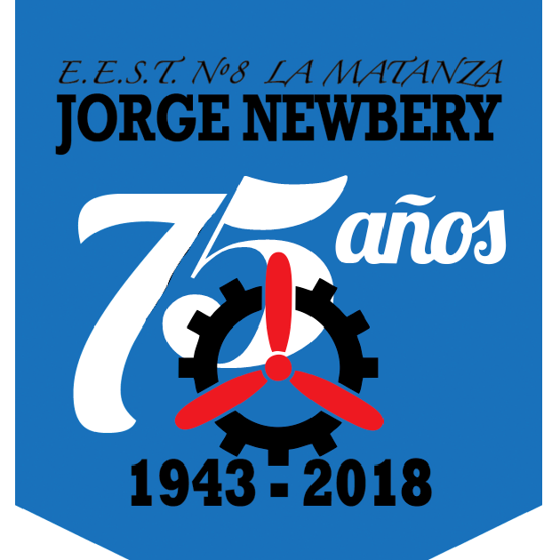

-
Desarrollo Web Full Stack
-2021 - 2022 año
Universidad Atlántida Argentina
-
Tec. Web Universitaria
-2019-En curso
Universidad Nacional de la Matanza
-
Secundario Completo
2007 - 2012 año
Colegio Tecnico Jorge Newbery N° 8 TTP en equipos e instalaciones electromecánica y servicios
